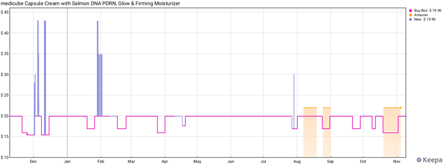
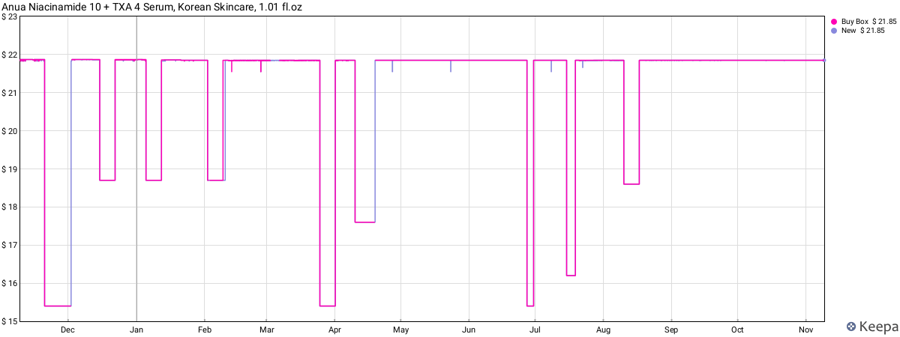
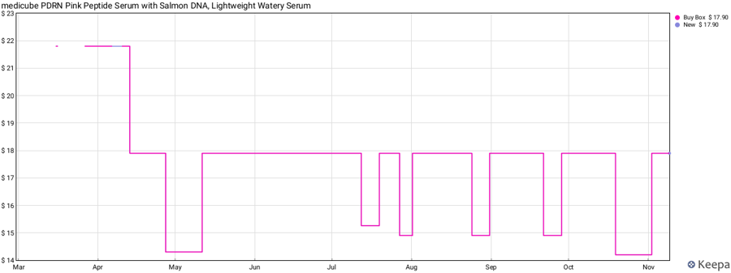
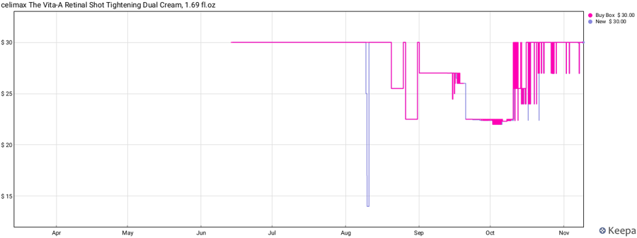
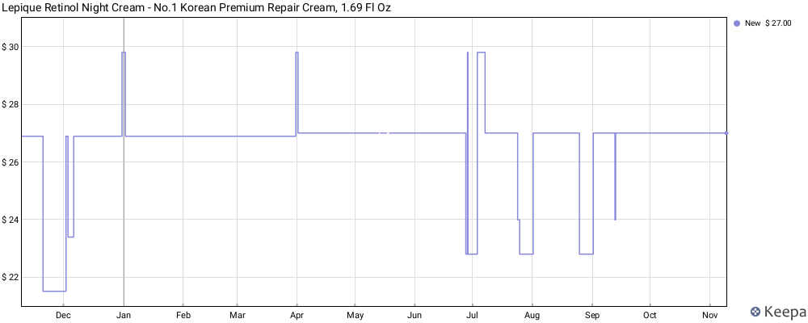
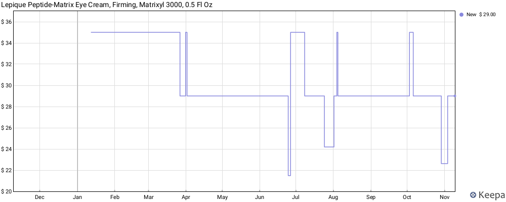
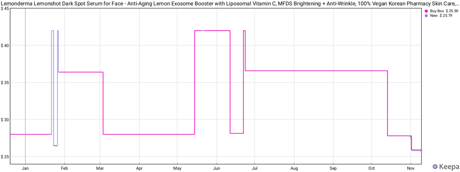
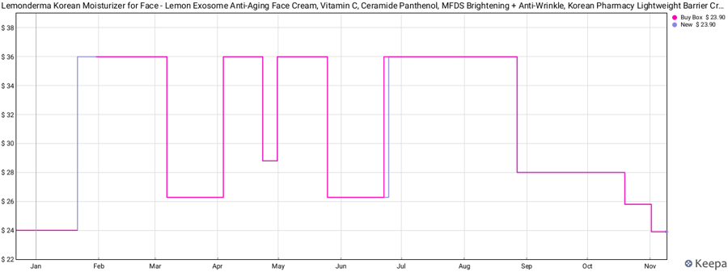

| 항목 | John 답 | 상태 | 다음 · 기한 |
|---|---|---|---|
| 네 가지 문제 | "모두 개선 필수" | 결정 | §7 시장별 설계 · 마스터북 §Ⅺ에 원칙으로 등재 |
| DC1 미국 12월 | "미국은 특별한 상황이니 유지" | 재검토 필요 | 같은 ASIN 승계 확정(매니저 10/26·신규 계정 리스팅 11/9) — 2판 카드의 '틀릴 조건'이 실현 → §6 DC1. 매니저의 병행 판매 답과 함께 11/28까지 |
| DC1-b 세럼 List $36.58 | "시험해보자" · "블프 전까지 정가 유지? 아니면 3일" · "api 있어서 그냥 접근되지 않아?" | 집행 완료 21:54 SP-API | List Price 칸만 $36.58(판매가 무변경, 재조회 확인) → 11/11 09:00 손님 화면 표시 점검 → 안 뜨면 세럼만 3일 정가(프로모션 화면 필요) |
| DC2 UAE 세럼 | "너의 추천 대안대로 가긴 할 건데, 재고가 충전되면 추천대로, 당분간은 지금 체제 유지" | B안 확정 · 재고 충전 뒤 | 그때까지 현행(쿠폰 → 11/15~18 정가+2개 20% → WF 89.90+W1). 11/20 점검 = 재고·B안 전환 준비 |
| DC3 UAE 크림 | "오케이. 내 제안대로 가자." | John 구조 확정 | 평시 99 + 행사 아닌 날 2+1 + 행사 때 2개 이상 10%(10/20 하한 결정 2번은 크림에 한해 뒤집힘) · 12월 2+1 창·딜 창 10%는 11/30까지 생성(AE 로그인 필요) |
| WF 화이트프라이데이 | "W1으로 간다." | W1 확정 · AE 로그인 대기 | 딜가 그대로 + 11/19~30 '2개 이상 10%' 2건 — 11/18 18:00 KST 전 생성(시작 = 제출 + 약 4시간) |
| DC4 신규 US 계정 | "추후 고려" | 보류(전제 확정) | 같은 ASIN·가격 이력 승계 = 확정 사실. 기준선 숫자는 12/16 측정 판독과 함께 |
| 마스터북 | "조사한 거 아마존 마스터북에 업데이트" | 완료 | amazon-ads-experts/consensus-playbook.md §Ⅺ 신설 |
Keepa 공개 그래프(domain=com, 365일)를 눈금으로 읽은 값입니다(금액 ±$0.3, 날짜 ±3~5일). 쿠폰·프라임 전용가는 Buy Box 선에 안 보입니다.
| 브랜드·제품 | 평소 가격 | 1년 가격선 | 할인 창 수 | 깊이 | 길이 | 할인일 비율 | 복귀 | 상품 페이지 정가 표시(11/9) |
|---|---|---|---|---|---|---|---|---|
| 메디큐브 캡슐크림 (월 4만개) | $19.90 | 고정 | 약 10 | −15~20% | 4~15일 | 약 25% | 같은 값 | List Price $21.90 → −9% 상시 표시 |
| 메디큐브 PDRN 세럼 | $17.90 | 4/12 영구 인하 뒤 고정 | 6 | −15~21% | 4~16일 | 약 15~23% | 같은 값 | List $21.80 → −18% |
| 아누아 나이아신아마이드 세럼 | $21.85 | 고정 | 9 | −14~30% | 4~9일 | 약 18% | 같은 값 | 취소선 없음(한 가격) |
| 셀리맥스 레티날 듀얼크림 | $30.00 | 6월 등록 → 8~10월 두 달 내렸다가 10/16 복귀 | 약 4 | −17%(최저 −25%) | 5~45일 | 약 35%(등록 후) | $30 복귀 | 취소선 없음 |
| 뷰티오브조선 글로우 세럼 | $16.80 | 5~8월 장기 하락 뒤 복귀 | 약 10 | −12% | 약 10일 | 40~48% | 8/18 이후 정확 | — |
| 코스알엑스 스네일 96 | $18.50 | 11/6부터 $16 새 수준 | 약 4+잡음 | −25% | 약 10일 | 25~30% | 대체로 | — |
| 티르티르 밀크스킨 토너 | $25(정가)/실제 $20 | 고정 | 약 18 | −20~30% | 약 12일 | 50~60% | $25 복귀 | 상시 프로모션형 |




John이 보낸 Keepa 화면 2장 + 같은 ASIN의 공개 그래프(365일)를 직접 받아 읽었습니다. 둘 다 3P 직영(Sold by Lepique Beauty), 정기배송(S&S) 10% 할인이 붙어 있습니다.


| 요소 | 르피크(미국 Buy Box) | 메디큐브·아누아 | 우리(미국) |
|---|---|---|---|
| 기준선 | 1개 고정 ($27 / $29) — 내릴 땐 한 번에($35→$29) | 1개 고정 ($19.90 / $21.85) | 없음(9번 변경, 5개월 계단) |
| 창 깊이·길이 | −16~26% · 3~10일 (BFCM만 2.5주) | −15~30% · 4~16일 | −24~45% · 19~110일 |
| 복귀 | 항상 같은 값 | 항상 같은 값 | 5개월째 복귀 없음 |
| 달력 | BFCM · 프라임데이 · 8~9월 자체 창 · 11월 초 | 행사 + 자체 1~2개 | 재고·현금 사정 |
| 상시 할인 도구 | 정기배송 10%(가격선 안 건드림) | List Price +10%(작은 취소선) | Buy 2 Save 20% · 구독 10% |
| 정가 터치 | 1~10일씩 옛 정가($29.80·$35)로 올렸다 복귀 — 목록가 검증 갱신으로 읽힘 🟡 | — | John 11/9 UAE 크림 132 = 같은 동작 |
배지: 🟢 공식(아마존 직원 공지·공식 블로그·고객 도움말·우리 실측) · 🟡 2차·추정 · 🔴 미확인.
| # | 규칙 | 뜻 (쉬운 말) | 배지 | 출처 |
|---|---|---|---|---|
| A0 (3판 정정) | '기준가'는 하나가 아니다 — 넷. ① 손님 화면 취소선 = 검증된 List Price vs Your Price ② US Typical/UAE Was = 90일 결제가 중앙값(쿠폰 검증 기준) ③ 딜 엔진 referencePrice = 딜 최대가·최소 할인 계산 기준 ④ 딜 날 손님 배지 % = ①이 검증돼 있으면 List 대비. UAE 크림 실측: ① List 132 ② 쿠폰 엔진 99(10/18 억제 "필요 순가 94.05 = 99×0.95") ③ 딜 엔진 99(10/19 딜 화면 referencePrice 99 · WF 최대가 89.00 = 99 − 최소 할인 AED 10) ④ 배지 132 대비(10/27 −32% · 11/10 −36%) | John의 "25% 표시 = 기준가 132"는 ①·④에서 맞다. 1판 "기준가 99"는 ②·③에서만 맞다. 2판의 "딜 참고가 132"는 틀렸다 — 손님이 보는 % 는 132 기준이지만 딜 최대가는 99 기준으로 계산된다. 마스터북 §Ⅺ-1 표로 등재 | 🟢(우리 실측) | uae/performance/notes.md 10/18 · 딜 달력 10/19 정정 · 11/5 WF 최대가 · 11/10 딜 표시 |
| A1 | Typical Price(US) = 최근 90일 고객 결제가의 비프로모션 중앙값, 판매자가 못 정함 | 아마존이 보는 '정가'는 손님이 실제 낸 돈의 중앙값. 싸게 많이 팔수록 중앙값이 빨리 내려간다 | 🟢 | sell.amazon.com 블로그 · 셀러포럼 공지 |
| A2 | 2026-05-18~: 90일 중 절반 넘는 날이 비프로모션 중앙값 아래면 프로모션 판매까지 포함해 계산 | 할인 날이 90일 중 45일을 넘으면 '할인가'가 곧 '정가' | 🟢 | 셀러포럼 공지 · ChannelX |
| A3 | 프로모션으로 표시되지 않은 가격 할인(판매가 칸 인하)은 비프로모션 판매로 취급 | Your Price를 내리면 즉시 '정가 판매'로 집계 → 기준가 직격(UAE 크림 Sale Price 36일 → 쿠폰 기준가 99) | 🟢 | 같은 공지 |
| A4 | 2026-04-23~: List Price는 '다른 소매점 최근 제공' 또는 'Featured Offer로 그 가격에 구매' 중 하나로 검증돼야 취소선 표시 | 아무 숫자나 정가 칸에 적어도 안 보인다('최근' 일수는 미정의). 르피크의 '정가 터치'가 이 검증을 갱신하는 동작으로 읽힘 🟡 | 🟢(기간 🟡) | 셀러포럼 공지 · ppc.land · globalselling |
| B1 | (2026 BFCM, US) 딜·프라임 전용 할인 가격은 직전 60일 최저 이하 + 직전 30일 최저 × 0.95 이하. 30일 최저에 LD·DOTD·PED·가격 할인·쿠폰 포함 | 상시 할인을 깔면 행사 때 그보다 더 내려야 딜이 된다 | 🟢 | globalselling 공지(2026-07) |
| B2 | 쿠폰(US, 2024-03-12~): 5~50%, 쿠폰 적용가 < was price 또는 최근 최저가 | 기준가가 내려오면 쿠폰이 거절된다 | 🟢 | 셀러포럼 공지 |
| C1 | amazon.ae 'Was Price' = 90일 결제가 중앙값, 한정 기간 딜 결제가 제외 | UAE도 같은 원리. 딜은 기준가를 안 건드리고 판매가 칸 세일은 건드린다 | 🟢(미러) | 고객 도움말 GQ6B6RH72AX8D2TD |
| C2 | UAE 쿠폰 2조건: 순가 ≤ Was×0.95 그리고 Your Price ≤ Was×1.3 · 정가를 내리면 억제된 쿠폰이 자동 부활(10/18 실측) · 가격 할인 도구는 셀러 평점 3.5 벽 | Was 99면 Your Price 128.70 초과 시 쿠폰 불가 → 132에서는 11/11 크림 쿠폰이 정지된다. 99로 내리면 되살아난다 | 🟢(실측) | notes.md 10/18 |
| D1 | 학술: 프로모션 빈도↑ → 가격 민감도↑(1997) · 장기 프로모션 증가는 비수익(1999) | 마트 데이터라 아마존 신생 브랜드엔 외삽 주의 | 🟡 | MSI · Duke |
| E1 | US 수수료: 쿠폰 $5+2.5% · LD/BD $70/일+1% · BXGY 2027-01-15부터 $5+2% | 우리 속도면 딜 수수료 ≈ 매출 25% → 신규 계정 창은 쿠폰·PED 위주 | 🟡 | Helium10 · ppc.land · 셀러센트럴 배너 |
| 미국 세럼 B0FV7XWDYF | 미국 크림 B0FV3QXSBF | UAE 세럼 | UAE 크림 2판 갱신 | |
|---|---|---|---|---|
| 셀러센트럴 판매가(Your Price) | $36.58 (2026-01-25~) | $36.00 | AED 134.34 (3/6~) | AED 99 (John 11/9 19:xx 99→132 → 20:21 다시 99) |
| 셀러센트럴 List Price 칸 | 비어 있음 | $36.00 | AED 154.00 | AED 132.00 |
| 지금 손님 화면 | $25.90, 취소선 'Typical price $27.80', −7% | $23.90, 'List Price $36.00', −34% | AED 134.34, 취소선 없음, 'Apply AED 35 coupon' | 20:1x '132.00 취소선 없음' → 20:30 'AED 99.00 · −25% · List Price AED 132.00' 복귀 실측 · 쿠폰 없음 · '3 for 2' 2+1은 11/9 23:59 GST 종료 |
| 아마존이 보는 기준가 | $27.80(Typical) | List $36(검증됨) | 🟡 ≥ AED 104.6(11/5 쿠폰 통과 역산) | 손님 취소선·딜 배지 List 132 · 딜 엔진·쿠폰 엔진 99(A0, 3판 정정) |
| 최근 30일 | 164개 · 조회 8,493 · 1.9% · BSR 78,422 | 101개 · 조회 5,655 · 1.8% · BSR 112,888 | UAE 전환율(SB 11/5): 세럼 99.34일 때 3.08% vs 134.34일 때 1.36% · 크림 가격대별 판매량은 아래 표 | |
| FBA 재고 | 408 (12/31 소진 7.8개/일 필요, 지금 5.5) | 251 (4.8개/일 필요, 지금 3.4) | 62 (입고 ~14일) | 335 |
| 예정 흐름 | 11/19~30 BFCM 공개 $20.90/19.90·프라임 $19.02/18.36 → 12/1~13 $23.90/22.50 → 12/14~31 $19.99/18.99 → 1/1 정가 복귀 | 11/15~18 정가+묶음20% → WF 11/19~30 딜 89.90 → 12/1~7 정가+묶음 → 12/8~20 딜 89.89 → 12/23~28 89.88 | 11/10 06:55~18:55 KST 라이트닝 84.90(132 대비 −36%, 메타 흡수 테스트 3세트 켜짐) → 11/11~18 쿠폰 AED 10 → 89(99 복귀로 검증 통과 예상) → WF 84.89 → 12월 84.88/84.87 + 묶음 5~10% | |
| 기간 | 단품가 | 일수 | 크림 개/일 | 평균 결제단가 | 개당 공헌이익(정본 산식) | 하루 공헌이익 |
|---|---|---|---|---|---|---|
| 9/1~9/25 (Sale Price 세일) | 99 + 2+1 | 25 | 1.00 | 99.0 | 49.8 | 50 |
| 10/1~10/17 | 132.21 + 2+1 | 17 | 3.12 | 100.3 | 74.4 (단품 기준) | ≈230 (결제단가 기준 ≈170) |
| 10/18~11/8 비딜일 | 99 + 2+1 | 12 | 3.58 | 96.7 | 49.8 | ≈178 |
| 딜 날(BD 10/20~25 · LD 10/27 · BD 11/2~4) | 89.1 | 10 | 5.70 | 90.5 | 42.4 | ≈242 |
| 11/5~11/8 | 99 (2+1 끝물) | 4 | 4.00 | 92.8 | 49.8 | ≈199 |
읽는 법: 132.21 구간(3.1개/일)과 99 구간(3.6개/일)의 차이가 생각보다 작습니다 — 단, 두 구간 모두 2+1이 켜져 있어 3개 묶음 구매자는 어느 쪽이든 개당 88을 냈고(평균 결제단가 100.3이 그 증거), 2+1 없는 132 단품 전환율은 아직 측정값이 없습니다. 광고비(SB 입찰)도 구간마다 달라 거칠게 봐야 합니다. 개당 공헌이익은 132가 99의 1.49배 → 판매량이 33% 넘게 빠지지 않으면 132가 흑자에서 앞섭니다(2순위). 손익분기 판매량 = 99일 때 3.6개/일 × 0.67 ≈ 2.4개/일.


① 기준선이 없다
경쟁사·르피크는 1년 내내 한 가격. 우리는 미국에서 가격 체제를 9번 바꿨고, UAE는 세럼 상시 쿠폰·크림 상시 99로 '평소가'가 곧 할인가였습니다.② 창이 짧지 않고 복귀하지 않는다
경쟁사 창은 4~16일 뒤 같은 값으로 돌아옵니다. '세일 기간이 확실하다'는 기대는 끝나는 날이 진짜 끝날 때만 생깁니다.③ 달력이 재고·현금 사정을 따른다
경쟁사는 아마존 행사 + 자체 창 1~2개. 우리 날짜(10/13·11/1·12/14)는 소진 목표·입고 일정에서 나왔고 손님에겐 신호가 아닙니다.④ 참조가를 관리하지 않는다
메디큐브는 List Price를 판매가 +10%로, 르피크는 옛 정가를 잠깐씩 터치해 취소선을 살립니다. 우리는 List가 비었거나(US 세럼) 검증 실패(UAE 세럼 154)입니다. UAE 크림은 John 11/9 132 터치가 첫 관리 동작.아마존 정의(A1)는 '고객이 지불한 가격의 중앙값'. 구매 건 기준이면 싸게 팔아 속도가 빨라질수록 할인가가 중앙값을 차지합니다.
| 구간(최근 90일 안) | 가격 | 일수 | 하루 판매(세럼+크림) | 세럼 메타 귀속 구매(부분 표본) |
|---|---|---|---|---|
| 8/10~10/12 | $36.58 / 36→28 | 64 | 5.0개/일 (324개) | 32건 |
| 10/13~10/31 | $27.80 / 25.80 | 19 | 9.4개/일 (179개) | 58건 |
| 11/1~11/8 | $25.90 / 23.90 | 8 | 14.1개/일 (113개) | 17건 |
세럼 메타 귀속 구매 표본(107건)의 가격 중앙값 = $27.80 — 표시 Typical price와 일치(🟡 구매 가중 재현).
현행 계획: 11/30에 '기준선 아래 날' 49일 > 45 → 중앙값 12/13 $27.80 → 12/31 $25.90, 2월까지 $25.90. 1/1 $36.58 복귀는 취소선 없이 +41% 인상으로 보임. 12월 가격을 어떻게 바꿔도 같음(레드팀) → 미국 기존 계정은 이미 늦었고, 무게는 '신규 계정이 같은 ASIN을 쓰느냐'(DC4).
John 말대로 amazon.ae는 Keepa가 없고 손님은 가격 이력을 못 봅니다. 그래서 '표시되는 정가'(List 132·134.34)만 지키면 손님 심리 쪽은 문제가 없다는 건 맞습니다. 다만 아마존 안의 도구 셋 중 하나(쿠폰 엔진)는 이력을 봅니다 — 크림 쿠폰이 99 기준가에 막힌 것이 그 예. 결론: UAE 운영 원칙 = 표시 정가를 지키고, 상시 볼륨 레버는 쿠폰 대신 딜·묶음으로. 쿠폰 엔진의 99는 10/18~11/9의 99 결제가 90일 창에서 빠지는 1월 중순부터 풀립니다(그동안 132 결제가 쌓이면 더 빨리).
DC1 · 미국 기존 계정 12월 가격 재검토 필요 · 기한 11/28
DC1-b · 미국 세럼 List Price $36.58 + "정가 판매 테스트" 승인 · 로그인 대기
e118a4e3($25.90/$23.90) 한 건에 세럼·크림이 같이 들어 있고 11/18까지 연장돼 있습니다. 세럼만 정가로 올리려면 이 프로모션에서 세럼을 빼야 합니다(가능 여부는 화면에서 확인, 프로모션 전체 취소는 크림까지 올라가므로 하지 않음). ② 블프 공개가 $20.90(804bdff7)·프라임 $19.02는 11/19에 자동 시작 — 맞습니다. 세럼을 올려도 블프 자격(30일 최저 $25.90 × 0.95 = $24.61 이상 할인)은 그대로입니다. ③ 숫자: 세럼은 지금 하루 약 8개(11/1~8 두 제품 합 14.1개 × 세럼 비중 약 0.6)에 개당 $12.04, $36.58이면 하루 약 3개(8/10~10/12 정가 구간 추정)에 개당 $20.30 → 하루 약 −5개·−$35. 9일이면 약 −45개·−$315, 3일이면 약 −15개·−$105.DC2·DC3 · UAE 세럼·크림 평시 구조 John 2차 제안 → §6-b에서 평가
크림은 John이 20:21에 99로 되돌려 지금 "99 · −25% · List 132"(20:30 확인)입니다. 세럼은 쿠폰 99.34(~11/14) 그대로입니다. 2차 제안(세럼 평시 134 + 상시 2+1, 크림 평시 99 + 상시 2+1, 행사 때 딜 + 2개 이상 10%)의 평가와 대안은 바로 아래 §6-b.
DC4 · 신규 US 계정 보류 — 전제는 확정
| 기준 | 크림(평시 99 + 상시 2+1) | 세럼(평시 134 + 상시 2+1) |
|---|---|---|
| ① 기준선 | ✅ 99 고정, List 132 검증돼 상시 "−25%" | ✅ 134.34 고정. 다만 List 154는 검증 실패라 평시 취소선 없음 |
| ② 짧은 창 · 같은 값 복귀 | ✅ 행사 = 딜(79~89) 뒤 99 복귀 | ✅ 행사 89~99 뒤 134 복귀 |
| ③ 행사 달력 | ✅ 쿠폰 검증·딜 회피 때문에 생기던 들쭉날쭉한 창이 사라짐 | ✅ 같음 |
| ④ 참조가 | ✅ List 132(단, 검증 유지 기간 미상 — 1월 중순 이후 위험, 르피크식 정가 터치로 갱신 검토) | ⚠️ 평시엔 표시할 참조가가 없음 |
| 1순위 볼륨 | ✅ 지금 구조와 같음(99 + 2+1 비딜 하루 3.6개) | ❌ 134.34 + 2+1 구간(9/19~10/1) 하루 0.7개 vs 쿠폰 99.34 구간 3~4개 · SB 전환율 1.36% vs 3.08% → 평일 약 −55% |
| 2순위 흑자 | ✅ 개당 49.8 그대로 | ❌ 개당 76.4로 1.5배지만 판매 0.45배 → 하루 이익 약 −33%(3.5×50.3=176 → 1.55×76.4=118 AED) |
주의: 9/19~10/1은 광고비가 하루 283 AED로 지금(500~600)의 절반이었고 리뷰도 적었습니다. 그래서 −55%는 과대일 수 있습니다. 그래도 같은 날 같은 광고에서 잰 SB 전환율(1.36% vs 3.08%)이 같은 방향입니다. 134.34 단품의 깨끗한 측정은 11/15~18(정가 + 2개 20%)이 처음입니다.
| 지금(쿠폰) | John A안 | B안(크림 틀) | |
|---|---|---|---|
| 손님 화면 | 134.34 + "Apply AED 35 coupon" | 134.34 + 2+1 배지 | "List 134.34 · −26% · AED 99" + 2+1 배지 |
| 평시 실결제(1개) | 99.34 | 134.34 | 99 |
| 개당 이익 | 50.3 | 76.4 | 50.0 |
| 평일 판매(추정) | 3~4개 | 약 1.5개 | 3~4개(가격 동일, 표시 방식만 다름 🟡) |
| 네 가지 | ③ 쿠폰 창 들쭉날쭉 · ④ 참조가 없음 | ④ 평시 참조가 없음 | ①~④ 전부 |
| 위험 | 쿠폰 엔진 기준가 침식(11/12 센서) | 볼륨·이익 하락 | Your Price 인하(R3)로 딜 엔진 기준가가 99로 → 이후 딜 최대가 ≈ 89(John 행사 범위 89~99와 맞음). List 134.34 검증 실패 시 취소선 없음 → 되돌릴 수 있게 시험: List 먼저 → 판매가 99 → 1시간 안에 표시 확인, 안 뜨면 134.34 + 쿠폰으로 복귀 |
| 세럼 | 크림 | |
|---|---|---|
| 지금 신청가(11/5 수정, 저장소 기록 — 셀러센트럴 로그인 뒤 실물 대조) | 베스트딜 4a0ec9d9 AED 89.90 · 134.34 대비 −33% | 베스트딜 1e945989 AED 84.89 · List 132 대비 −36%(평시 99 대비 −14%) |
| 뒤 딜(사슬) | 12/8~20 89.89 · 12/23~28 89.88 | 12/8~20 84.88 · 12/23~28 84.87 |
| W1 딜가 그대로 + WF 동안 '2개 이상 10%' | 1개 89.90(배지 −33%) · 2개 개당 80.91(−40%) · 이익 43.2/36.5 | 1개 84.89(배지 −36%) · 2개 개당 76.40(−42%) · 이익 39.3/33.0 |
| W2 딜가 인하 + '2개 이상 10%' | 1개 79.90(배지 −40.5%) · 2개 71.91 · 이익 35.8/29.8 · 손익 유지에 판매 +21% 필요 | 1개 79.00(배지 −40.2%) · 2개 71.10 · 이익 34.9/29.0 · 판매 +13% 필요 |
| W2의 대가 | 딜 사슬(R8) 때문에 12월 딜 4건도 79.89/79.88 · 78.99/78.98로 내려야 통과 → 12월 19일이 −40%가 됩니다(②짧은 창과 충돌). 시작 전 딜은 인하만 가능 → 되돌릴 수 없음. 세럼은 재고 62개(11/5)·입고일 미정이라 깊게 내리면 WF 초반 품절 위험. | |
"다른 브랜드 40%"는 John 관찰이고 우리가 amazon.ae에서 잰 값은 아직 없습니다. WF 첫날 경쟁 K-뷰티 가격을 재서 12월 딜 판단에 씁니다. 6/23 '33% 상한' 폐기는 11/7 John이 UAE 딜엔 적용 안 함으로 정리, 딜 + 묶음 중첩(−40%대)도 이번 John 제안으로 같은 취급.
2판은 "지금 2개만, 나머지는 3순위"였습니다. John 2차 답("네 가지 모두 개선 필수")으로 바뀌었습니다. 각 칸은 볼륨·흑자를 깎지 않고 지키는 방법을 먼저 적었습니다.
| 문제 | UAE (지금부터) | US 기존 계정 (~12/31 소진) | US 신규 계정 (2027 1분기) |
|---|---|---|---|
| ① 기준선 1개 | 크림 99 고정 · 세럼 11/20 판정(A 134 / B 99) 뒤 고정. Your Price는 그 뒤 건드리지 않음 | 소진 모드 예외. 단 같은 ASIN이라 12월 값이 신규 기준가가 됨 → DC1 재검토(11/28) | 측정 모드(11/3~18 · 12/1~13) 판독으로 $23.90/$25.90/$27.80 중 하나를 한 번에 |
| ② 짧은 창 · 같은 값 복귀 | 할인은 딜·묶음·2+1로만(Your Price·Sale Price 금지). 딜 끝나면 기준선 복귀. 12월 딜 19일은 많음 → WF 결과 보고 12/23 딜 유지 여부 재판단 | BFCM 뒤 계단은 예외로 기록 | 행사 4~10일 · 쿠폰·프라임 전용 할인 위주 · 끝나면 같은 값 |
| ③ 행사 달력 | WF(11/19~30) · DSF(12/4~1/17 중 딜) · 라마단·이드 · 프라임데이 + 월 1회 자체 창(후보: 월급날 25일 전후 — 9/25·10/25 주문 2.0배, 표본 작음). 메타 '매일 프로모션처럼' 상시 문구는 유지(숫자 없는 긴박 문구 규칙) | BFCM·12월 계획 그대로(공표된 LP 창) | 프라임데이·BFCM·봄 세일 + 월 1회 자체 창, LP·메타에 미리 공표 |
| ④ 참조가 | 크림 List 132 유지(검증 유지 위해 르피크식 '정가 터치' 검토, 1월 중순 전) · 세럼 B안이면 List 134.34 | 세럼 List $36.58 시험(로그인 대기) | List = 기준선 +10~15%를 런칭 첫 2~3주 실제 판매로 검증 |
| 볼륨·흑자 숫자 | 크림 평일 3.6개 × 49.8 · 딜 날 5.7개 × 39.3(84.89) · 세럼은 11/15~18 측정이 판정 근거 | 세럼 7.8개/일 필요(지금 약 5.5~8) · 개당 $12.04 → BFCM $8.17 | 기준선별 개당 $10.49~13.51 |
마스터북 등재: amazon-ads-experts/consensus-playbook.md §Ⅺ(가격·프로모션) — '정가' 4종, 규칙 R1~R11, 잘하는 브랜드 가격선, 네 가지 문제, 자사 실측, 제안 전 체크 5문.
3판 원자료: research/v3-1109-night.md(John 2차 답·UAE 구조별 판매·가격점별 이익·WF 선택지·US 테스트 비용). 원자료: 같은 폴더 research/ (rules·keepa·measurements·verify·redteam + v2-1109-evening.md: John 답·르피크 판독·크림 판매량·CM·라이브 상태). 저장소 30_growth/marketing/common/reports/2026-11-09-pricing-integrity/.